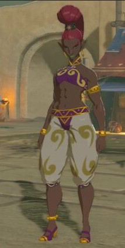
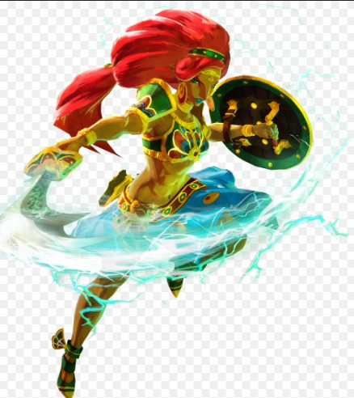
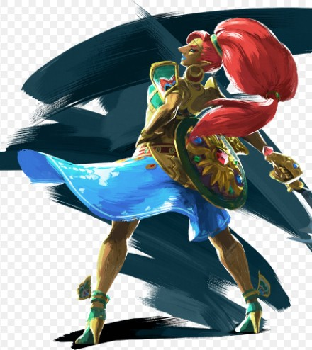

Le peuple Gerudo
Les Gerudos sont un peuple exclusivement féminin vivant dans le désert de Gerudo, au sud d'Hyrule. Elles sont facilement reconnaissables par leurs traits distinctifs, notamment leurs peaux bronzées, leurs cheveux rouges et leurs grandes capacités de combat. Leurs coutumes sont centrées sur la survie dans les conditions extrêmes du désert, et elles sont réputées pour leur habileté au combat à l'arme blanche. Leurs traditions sont fondées sur la force et la sagesse, et elles vénèrent souvent des divinités liées au soleil et à la guerre. Dans Breath of the Wild, la chef des Gerudos, Riju, est une jeune et courageuse leader qui s’efforce de protéger son peuple des ravages de la calamité. Leur créature divine, Vah Naboris, est une immense machine de foudre, et elles ont une histoire de lutte contre les forces de Ganon.
Caractéristiques du peuple Gerudo :
- Peuple de femmes guerrières
- Maîtrise de l'épée
- Style de vie nomade dans le désert
- Utilisez les capacités électriques pour naviguer à travers le donjon.
- Activez les terminaux en utilisant les capacités d'Urbosa.
- Évitez les attaques électriques et les pièges en utilisant votre bouclier et vos compétences de combat.
- Utilisez les capacités électriques pour atteindre le boss.
- Évitez ses attaques électriques en utilisant votre bouclier.
- Attaquez-le avec des flèches et des attaques de mêlée.
Galerie
  Donjon : Vah Naboris
Le donjon de Vah Naboris est situé dans le Désert Gerudo. Voici comment le battre :
Étapes pour battre Vah Naboris :
Boss : Foudre de Ganon
Le boss du donjon Vah Naboris est la Foudre de Ganon. Voici comment le battre :